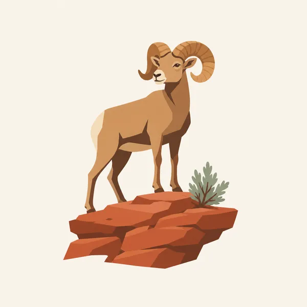
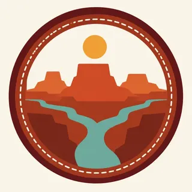

01
Island in the Sky
A flat-topped mesa with short walks to rims. Mesa Arch frames the sunrise for a crowd. The longer view, without the arch, is the one that explains the name.
TrailMark Archive Edition
Utah | Green and Colorado
Two rivers cut a maze of mesas, and from the rim the scale arrives before any trail does.
Archive No. TM-CAN-012
National Park since 1964
Collection Southwestern Parks
Park Overview
Canyonlands National Park, in southeast Utah, is organized by the Green and Colorado rivers. They meet inside the park and divide it into country that feels like separate parks.
Island in the Sky is the high mesa most people reach first, a look down onto both rivers. The Needles is a sandstone puzzle to the south. The Maze is the remote western district, earned more than visited.
There is no road inside the park that ties those districts together. The drive around is long and outside the boundary. That inconvenience is the design.
Emotional Thesis
From Grand View Point the mesas step away until they become weather. You can leave satisfied and still have missed the canyons you would have had to walk into.
TrailMark treats Canyonlands as the plateau's wide chapter: less a single icon than a map you are standing inside.
Landscape Highlights
01
A flat-topped mesa with short walks to rims. Mesa Arch frames the sunrise for a crowd. The longer view, without the arch, is the one that explains the name.
02
Cedar Mesa sandstone banded and jointed into spires you walk between, not only admire. Water is the limiting factor. The trails assume you planned.
03
A district of canyons west of the rivers, reached by rough roads outside the park. It is the chapter for people who already know how to be lost on purpose. Check NPS before you treat it as a day trip. It is not one.
Wildlife
Canyonlands wildlife is desert wildlife with a river running through it: bighorn on the cliffs, cottonwood birds along the water, and everything else using shade.

01
Desert bighorn use the rims and side canyons. A long lens or no picture is the right choice.
02
Ravens follow overlooks. Food left on a wall becomes their argument for staying.
03
The rivers hold their own life, including fish assemblages that belong to the Colorado system. The view from the rim does not show that chapter.
Geology
The park is sedimentary rock of the Colorado Plateau, almost horizontal, so erosion makes benches, mesas, and needles instead of tilted mountains.
01
The rivers are the saw. Side canyons are the smaller saws. The Island is what has not been sawed away yet.
02
The Needles are jointed Cedar Mesa sandstone. The grabens nearby are blocks of earth that dropped along cracks. You can walk the crack.
03
Upheaval Dome, on the Island, is a curious circular structure whose origin visitors still argue about. The park is allowed to contain an unsolved shape.
The kindest walking weather, and the season when flowers show if winter gave any water. Wind on the Island can still sandblast a picnic.
The mesa is hot and the canyons are hotter. Carry water as if the overlook were a lie, because for hiking it is.
Long light on the basins and fewer vehicles at the rim. Many of the best days in this park are in this season.
Snow on the Island, mud on the Needles roads, and a quiet that summer visitors do not get. Check which districts are reachable before you commit to one entrance.
Photography
Canyonlands goes flat in a single plane of sandstone. Layers of distance are the subject.
01
Include two or three levels of mesa so the eye can fall. One cliff reads as a wall.
02
When you can see water, use it. It is the only object that explains why the canyons exist.
03
If you photograph panels, do not touch, chalk, or wet them to increase contrast. The image has lasted longer than that trick deserves.
Field Notes
Canyonlands is what remains when you stop asking a desert park to have one postcard.
TrailMark Field Notes

Badge Story
The Canyonlands badge should feel like a view outward, mesas stepping down, not a single arch or a single hoodoo.
Horizontal beds are the point. Keep the lines level.
A river thread, if it appears, should be thin.
It must not be interchangeable with Arches. This park is expanse.
Archive No.012
LocationSoutheast Utah
ReleaseMesa Mark
Stewardship / Safety
People get into trouble in Canyonlands by trusting a map that ignores how far the next water is, or by driving toward the Maze as if it were the Island. Check NPS for roads and backcountry rules.
Carry water for the walk you are actually taking, including the return to the rim.
Do not rely on one entrance to reach another district. The rivers are in the way on purpose.
Stay on rock or trail. Dark soil and cryptobiotic crust are doing the desert's maintenance.
Leave archaeological sites untouched and unimproved for the next photograph.
Current conditions, fees, and alerts are on the National Park Service site.
Continue the Archive
Arches sits just to the northeast. Grand Canyon is the same river system after it has cut much deeper.